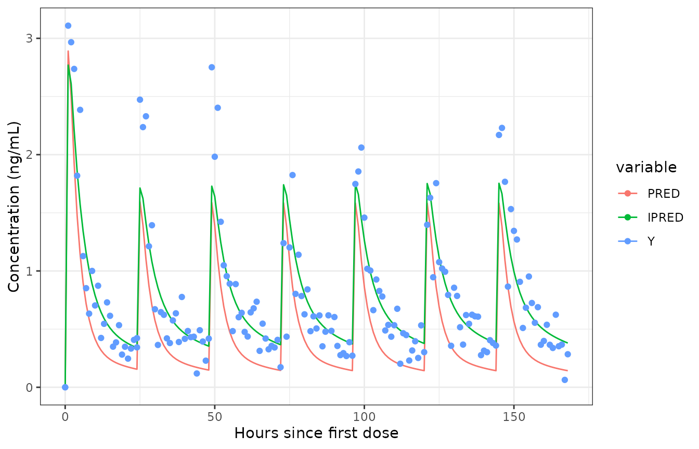
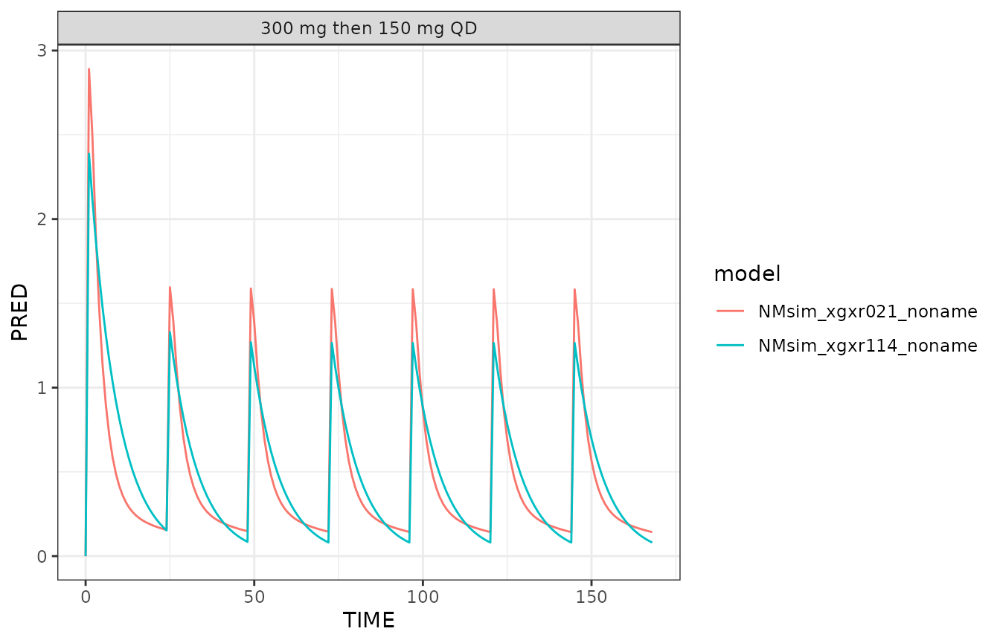

Built 2024-08-24 using NMsim 0.1.3.
Objectives
This vignettes aims at enabling you to
Use
NMsimto simulate Nonmem models with a given input data setDistinguish between and perform the most common types of simulations:
new subjects,
Simulate multiple new subjects and derive prediction intervals
Simulate more than one Nonmem model in one
NMsim()function callImportant arguments
Speed up NMsim by avoiding large table statements
Add residual variability to an already performed model simulation using
NMsim.
Prerequisites
You should have configured NMsim with the path to the
Nonmem installation and maybe also PSN. See NMsim-config.html.
Don’t worry - it is very easy.
Estimation based on single dose, simulation of multiple doses
The situation is like this: We collected PK and PD data from a single
ascending dose trial on a drug candidate. A PK model was estimated using
Nonmem. We have on file the model input and output control streams (here
with extensions .mod and .lst respetively),
parameter estimates (.ext).
We want to predict concentrations in a multiple dose regimen. This is a regimen that we have not studied in clinical trials so far, and we have decided to use population PK simulations for this purpose.
The Simulation data set
You can create a Nonmem-compatible simulation data set however you
want. We will keep that as a separate topic and read one that was
already created in NMsim-DataCreate.html
using tools provided with NMsim to make that task simpler and faster to
do:
dat.sim <- read.csv(system.file("examples/derived/dat_sim1.csv",package="NMsim"))Simulation of a new subject
This is the first time we are using NMsim, and we just
want to try the simplest thing we can think of. Simulate a new subject
on the considerd multiple dose regimen with our estimated PK model from
the single dose study.
file.mod <- system.file("examples/nonmem/xgxr021.mod",package="NMsim")
simres <- NMsim(file.mod=file.mod,
data=dat.sim)We plot population and individual predictions as the simulations of
(in this case) the typical subject and one simulated subject. The
variable called Y is the individual prediction plus
residual variability. paper. The code is included to show that the
results from NMsim are ready to be plotted. The main reason
data is transformed to long format (melt) is to get ggplot2
to generate the legend automatically.
datl <- as.data.table(simres) |>
melt(measure.vars=cc(PRED,IPRED,Y))
ggplot(datl,aes(TIME,value,colour=variable))+
geom_line(data=function(x)x[variable!="Y"])+
geom_point(data=function(x)x[variable=="Y"])+
labs(x="Hours since first dose",y="Concentration (ng/mL)")
The reason we can plot a simulation with residual variability is that
the control stream includes a variable Y defined with
residual variability in $ERROR:
Y=F+F*ERR(1)+ERR(2)More on residual variability in case you don’t have such a line later in this paper.
What happened?
NMsim uses automation tools from NMdata
to
- Save the data in a Nonmem-friendly format
- Create a simulation control stream based on the referenced input control stream
- Update the initial values based with estimated values
- Modify input data-related sections for reading input siulation data
- Modify output table file names and paths to generate simulation output tables
- Run Nonmem
- Read output tables and combine them with input data into one data object
The generated files have all been stored in a folder called
NMsim next to the estimation control stream. More on that
shortly in the section “A few basic additional arguments to
NMsim”.
Let’s see the first few lines of the returned object:
simres[1:3]
#> ROW ID TIME EVID CMT AMT II ADDL DV MDV TVKA TVV2
#> <num> <int> <num> <num> <num> <num> <num> <num> <num> <num> <num> <num>
#> 1: 1 1 0 1 1 300 0 0 0 1 2.1666 75.729
#> 2: 2 1 0 2 2 NA NA NA 0 1 2.1666 75.729
#> 3: 3 1 1 2 2 NA NA NA 0 1 2.1666 75.729
#> TVV3 TVCL KA V2 V3 CL Q IPRED Y PRED RES
#> <num> <num> <num> <num> <num> <num> <num> <num> <num> <num> <num>
#> 1: 150.06 13.978 2.1666 63.464 150.06 17.944 8.4865 0.0000 0.0000 0.0000 0
#> 2: 150.06 13.978 2.1666 63.464 150.06 17.944 8.4865 0.0000 0.0000 0.0000 0
#> 3: 150.06 13.978 2.1666 63.464 150.06 17.944 8.4865 3.1946 3.0486 2.8907 0
#> WRES trt model nmout
#> <num> <char> <char> <lgcl>
#> 1: 0 300 mg then 150 mg QD NMsim_xgxr021_noname TRUE
#> 2: 0 300 mg then 150 mg QD NMsim_xgxr021_noname TRUE
#> 3: 0 300 mg then 150 mg QD NMsim_xgxr021_noname TRUENotice a few things about the returned data:
- All columns from the output tables defined in the input control stream are there. We will soon learn how to modify this
- Input data columns are there too (like
trt). - Additional columns (
modelandnmout) may be familiar toNMdatausers. - We will soon learn where the “_noname” in the
modelcolumn comes from.
How to (re-)read the simulation results
NMsim() creates an .rds file with
information about where all the results are stored. It is named based on
the model name and the name.sim argument. NMsim provides
the path to it in the console at every run. You can also specify exactly
where it should be stored and the file name using the
file.res argument. Run the function NMreadSim
on this file to (re-)read all the simulation results.
NMreadSim also supports the wait argument
making it wait for all the simulation results to be available in case
you submitted a large simulation to a cluster and want to continue your
execution only when it’s all done.
Multiple models
Before we continue with that model, we want to compare a simulation
based on this model to another model we are considering.
NMsim can do this and collect the data into one object:
files.2.mod <- system.file(c("examples/nonmem/xgxr021.mod","examples/nonmem/xgxr114.mod"),package="NMsim")
simres.2models <- NMsim(file.mod=files.2.mod,
data=dat.sim,
file.res="simulate-results/simres_2models_paths.rds"
)We included the file.res argument to specify one single
rds file because if not NMsim would create one for each of
the two models simulated. We can re-read the results like this:
simres.2models <- NMreadSim("simulate-results/simres_2models_paths.rds")In case multiple models are provided, NMsim simply loops
over them. It does collect all the results, and we can use the
model column to separate the two simulations. Since we are
so far just simulating on subject with each model, it makes litlle sense
to compare individual preditions. We just plot the population prediction
(PRED):
ggplot(simres.2models,aes(TIME,PRED,colour=model))+geom_line()+
facet_wrap(c("trt"),scales="free")
For simplicity, we shall show the rest of the examples for just one model. Any of them could be run on multiple models the same way as shown above.
A few basic additional arguments to NMsim
The first couple of examples were run with the bare minimum of
arguments - estimation control stream and simulation data set. You are
obviously encouraged to read the help of NMsim to learn
about the many useful features it has, and you will learn some more in
this vignette. But there are a few arguments that you should learn about
at this point already. Here they are:
-
dir.simsPath to a folder in which all generated files will be stored. Use this to avoidNMsimwill write into the directories where your estimation models are. They may not belong there at all. You may want to separate the model development step from the post-processing step. You are encouraged to explore whatNMsimleaves in this directory (you will find fully reproducible simulation Nonmem runs including simulation input data). -
dir.reswhiledir.simscontains all the Nonmem files, you can specify a separate directory just for compressed results. Therdsfiles containing information about where the simulations were performed will also be saved here. This means that as soon as results have been read once, all contents ofdir.simscan be purged without loss of critical data. This can save a lot of disk space. -
name.simGive your simulation a meaningfull name. We did not do this above, soNMsimcalled it “noname”. -
table.varsVery important. This redefines the output table section from the estimation control stream to the simulation control stream. The estimation control stream may have too many variables printed (which will make Nonmem slow), or it may not have some that are useful for the simulation analysis. See how this is used below. Once you get used to this argument, you will use it very frequently. -
waitWait for simulation to be done and return the resulting data? If not a path to the rds file to be read withNMreadSimwill be returned. -
reuse.resultsIfTRUEand results are found on file, those will be read instead of rerunning the simulation. -
seedA numeric value that will be used in Nonmem’s $SIMULATION section
You will learn about a few more arguments in the next examples.
More subjects and prediction intervals
To create a prediction interval based on the selected model, we need
to simulate multiple new subjects. There are two ways to easily obtain
that. One is to repeat (rbind) the simulation input
dataset, one repetetion per new subject, and then update the
ID column to get distinct subjects.
Multiple subjects created in simulation input data
The follwing shows how one could generate 1000 subjects using
data.table. (I use data.table a lot, if you
can provide a good way to do this without, I am happy to include
that).
dat.sim.1000 <- NMdata::egdt(
as.data.table(dat.sim)[,!("ID")]
,
data.table(ID=1:1000)
)
dat.sim.1000[,ID:=.GRP,by=.(ID,trt)]
## order with respect to new IDs
setorder(dat.sim.1000,trt,ID,TIME,EVID)
## check dataset
NMcheckData(dat.sim.1000,type.data="sim")We now simulate 1000 subjects by plugging in this data object:
simres.n1000.1 <- NMsim(file.mod=file.mod,
data=dat.sim.1000,
dir.sims="~/NMsim_vignette", ## where to store simulation files
name.sim="N1000_datarep"
)Multiple subjects generated by Nonmem
The other way to simulate multiple subjects is making use of Nonmem’s
SUBPROBLEMS simulation feature which makes Nonmem rerun the
simulation the specified number of times. Notice that to do this, we use
the dat.sim data without the 1000 replications. We then
make use of the NMREP column generated by
NMdata::NMscanData to redefine the ID
column:
simres.n1000.2 <- NMsim(file.mod=file.mod,
data=dat.sim,
subproblems=1000,
dir.sims="~/NMsim_vignette", ## where to save and run Nonmem simulations
dir.res="simulate-results", ## where to save simulation results
name.sim="N1000_subproblems",
)
simres.n1000.2 <- as.data.table(simres.n1000.2)[,ID:=.GRP,by=.(NMREP,ID,trt)]The two approaches are computationally about equally fast, the most significant difference probably being in Nonmem reading a smaller or larger simulation input data file. Unless the input dataset becomes very large, it is merely a question of preference of the modeler which one to use. In a case where the simulated patients need different dosing or sample schedules, the manual construction of the data is needed - because it’s not a straightforward replication.
The prediction interval
We now plot a prediction interval - in this case based on the results
of the simulation using SUBPROBLEMS; this makes no
difference to how to derive the prediction interval.
simres.pi <- as.data.table(simres.n1000.2)[,setNames(as.list(quantile(IPRED,probs=c(.05,.5,.95))),cc(ll,median,ul)),
by=.(trt,TIME)]
simres.pi$type <- "pi"
simres.pi$pi.cover <- "90%"
p.pi.typ <- ggplot(simres.pi,aes(TIME,fill=trt))+
geom_ribbon(aes(ymin=ll,ymax=ul,alpha=pi.cover))+
geom_line(aes(y=median,colour=trt))+
scale_alpha_manual(values=c("90%"=.5))+
labs(x="Hours since first dose",y="Concentration (ng/mL)")
p.pi.typ
Read previously generated simulations
There is no need to save simulation results because they are already
saved by NMsim. Instead, use arguments
dir.sims, dir.res and name.sim to
make sure to get a meaningful structure for the generated files. Then
read the results with NMreadSim().
simres.n1000.1 <- NMreadSim("simulate-results/NMsim_xgxr021_N1000_datarep_paths.rds")In fact, that is also what NMsim does once Nonmem has
run.